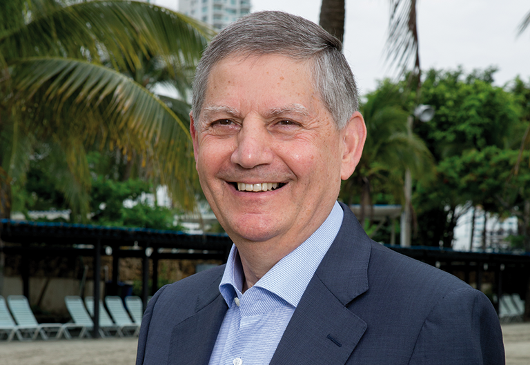

In London, the economist gave an exclusive interview to Petrobras Magazine Global Connections, in which he talked about the urban reconfiguration of cities, the change in energy use culture and the sector’s challenges for sustainable economic development.


PMGC:
Is it possible to reconfigure the energy system to make it more sustainable?
PMGC:
What are the main priorities and challenges on the path to sustainable development?
PMGC: How can we feasibly achieve this urban reconfiguration in a context of cities marked by uncontrolled growth?
PMGC: You mentioned that we may be on the path to universal access to energy in 20 years. Is this really feasible?
PMGC: How do you view the effects of pre-salt exploration in the short and medium terms?
PMGC: How can we make the leap toward a more sustainable global economic model without harming development?
The director of the World Energy Council’s scenario
forecasting area, Ged Davis plays a strategic role in global
discussions of future energy scenarios. Optimistic, Davis
believes that it is possible to balance development with
environmental preservation and points out some paths for
us to achieve universal access to energy
Rule of Seven
Ged Davis has developed what he calls the “rule of seven.” “When you say you are working with prospects for 2020 or 2050, people get very excited about finding out the end result,” he explains, “but in general, the truth is that when you work looking to 2030, you don’t resolve everything and then wait 15 years to see whether you got it right. You go back and revise the forecast in a few years.” The rule of seven says that, when we work on analysis with a time horizon of 20 years, we should divide this number by seven and reconsider the work around three years from now. Likewise, when we work with a time horizon of 50 years, it will probably be necessary to revise the work within seven or eight years.
Davis: For five years, until 2012, I was the co-president of the Global Energy Assessment [a group of specialists formed by the International Institute for Applied Systems Analysis to make forecasts about the global energy scenario]. This work involved around 300 researchers across the planet, aimed at examining what we need to do to achieve what we saw as a sustainable world. It also provided the requirements for us to achieve universal access to energy within 20 years, as well as examples of plausible trajectories for the global energy system to keep climate change within the 2°C limit established by the IPCC [Intergovernmental Panel on Climate Change]. However, we need to consider that the energy system in itself moves slowly, with a lot of inertia. Nevertheless, what we can change is the way we see what matters in the energy world, and new ways of thinking lead to new directions in terms of policies, prices and investments. I believe we have the tools needed to create a sustainable world. The question we should answer is whether this is really what we want and whether we are prepared to pay for it.
Davis: Since 1850, the global energy system has slowly but steadily become more efficient. One aspect of this system has been de-carbonization, which is essentially reflected in the movement from wood to coal, the introduction of oil, then the introduction of natural gas and now, in some countries, the developmentof nuclear, wind and solar power. I believe that, in most of the scenarios, this trend will continue. However, in line with historical data, the evolution in efficiency and de-carbonization may be too slow for us to achieve our current sustainability goals. We are also working with more radical scenarios, focused on the need for a fundamental energy transition. At the Global Energy Assessment, we analyzed around 40 possible futures in which the IPCC targets could be achieved. However, this now seems increasingly difficult to achieve in practice. Given the existing government commitments, we are on the path to an increase of 3.5 to 4°C. On the more radical side, there are scenarios emerging now, and being seriously examined, which consider the possibility of rapid growth in the use of electric vehicles, the reconfiguration of cities and ever more sustainable urban development. This is likely to lead to rapid improvements in energy efficiency, which has been hard to achieve, but there are people starting to explore more radical futures.
Davis: A lot can be done from the bottom up. There are always positive models. These issues have a long lifespan, they aren’t easy to change, and they are even more complicated when funding is limited. However, this has not stopped various developments from happening. Among cities with the most resources, London is an example. You don’t reconfigure the whole city, but parts of it. And when people invest in these areas, they become models. The Middle East has some very unique examples; they are models of transformation. And you have private companies developing experimental bases. They may be new electric vehicles or new smart homes. There is great scope for experimentation in new buildings. Nevertheless, we need to take care. There is always a limit to what people are prepared to spend on energy. There are some major challenges and we shouldn’t underestimate them, but we live in a world that is moving toward greaterorganization. And the biggest challenge for us is to take these new examples from the front line to the political authorities, and show them economically feasible ways of working with them.
Davis: The Global Energy Assessment studied how we could achieve this, and estimated the need for global spending of around US$40 billion per year for 15 years. This work was largely funded by the United Nations, which established an organization called Sustainable Energy for All, which is working to achieve this goal. The key issue, of course, is to obtain the US$40 billion per year. In a way, this is a relatively small share of global energy investment. In all, we invest around US$1.2 trillion annually, so if we wanted to do it, we could. Realistically, if we examine the World Energy Council’s scenarios, we won’t have universal access even in 2050. We still envisage something between 400 and 800 million people without access to energy, perhaps up to 1 billion, in a world that continues to grow at the current pace in terms of population. However, we shouldn’t forget that some countries have already made a lot of progress in these areas.
Davis: The existence of larger petroleum resources than we had previously assumed provides an opportunity for substantial development in Brazilian production, although not without costs and challenges. The very fast development of resources is always a challenge for a country’s economic administration. New advances, money, new exports – all this tends to shift the balance in a direction oriented to these resources. Brazil needs to consider these issues. In part, this is to do with the pace of development, and this is an issue that any government will have to deal very carefully with in the coming decades. Petrobras is a major player, and I imagine that it will be for a long time, especially in the context of pre-salt. Nevertheless, it also has all the scope of challenges of a global player.
Davis: We have seen great changes in the technologies we use over the last 100 years, with immense potential for the development of more efficient equipment, and perhaps new energy options. Over the last 20 years, we have seen considerable changes in our values with regard to the environment. We have a highly inventive and welleducated emerging generation that has a good chance of successfully tackling these issues. However, let’s be clear – we need both: we want a world for our grandchildren that is as prosperous and as clean as the one we inherited, and hopefully even better. I believe that the two things are possible. If we continue to move ahead, we will need tougher and more efficient regulation in some countries. Maybe we need market incentives. Maybe we need carbon markets, as already exist in certain countries, to encourage people to take climate change more seriously. We need more work to protect the Amazon. It is this set of actions that will provide us with the capacity to deal with these issues.